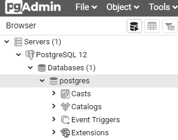
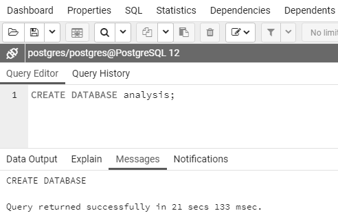
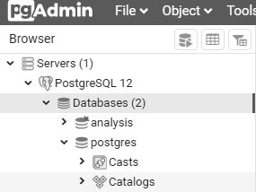
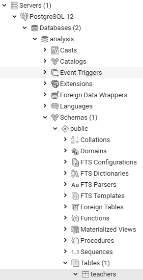
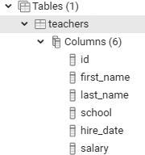
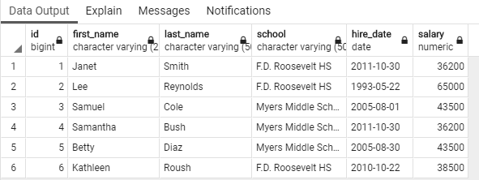

SQL语言不仅是一种从数据中提取知识的手段，它还能定义储存数据的结构，使得我们可以组织数据中的关系，而表（table）就是这些结构中最主要的一个。
表是一个由行（row）和列（column）组成的网格，用于储存数据。表中的每个行都包含一个或多个列，而每个列则包含指定类型的数据：最常见的是数字、字符还有日期。我们不仅通过SQL定义表的结构以及每个表如何关联数据库中的其他表，还使用SQL来提取或查询表中的数据。
在这一章，我们将创建首个数据库，向它添加表，并在pgAdmin的界面中使用SQL向表中插入数行数据，最后再使用pgAdmin查看执行结果。现在，让我们首先来了解一下表。
要了解数据库中的数据，首先要做的就是了解表。每次我开始着手处理一个新的数据库时，我首先要做的就是看看里面的表。我会从表的名字以及它们的列结构里面寻找蛛丝马迹。这些表是否包含文本、数字，又或者两者兼有？每张表包含了多少个行？
之后，我会观察数据库中表的数量。最简单的数据库可能只有一个表，而一个处理客户数据或者跟踪航空旅行的完整应用则可能拥有数十甚至数百张表。表的数量不仅让我知道需要分析多少数据，它还是一个提示，告诉我应该探索每张表之间的数据关系。
在深入研究SQL之前，让我们先来看一个例子，了解一下表里面的内容可能是什么样子的。我们将使用一个虚构的数据库来管理学校课程的招生情况；在这个数据库里面，会有几张表用于跟踪学生和他们的课程。第一张表名为student_enrollment，它记录了每个课程的报名学生：
student_id class_id class_section semester---------- ---------- ------------- ---------CHRISPA004 COMPSCI101 3 Fall 2023DAVISHE010 COMPSCI101 3 Fall 2023ABRILDA002 ENG101 40 Fall 2023DAVISHE010 ENG101 40 Fall 2023RILEYPH002 ENG101 40 Fall 2023从这个表可见，两名学生报名了COMPSCI101课程，三名学生报名了ENG101课程。但是这个表并未记录每个学生和课程的具体细节。在这个例子中，这些信息被单独储存在名为students和classes的表里面，并且它们与student_enrollment表相互关联，而这正是关系数据库开始展现威力的地方。
sutdents表的前面几行包含以下内容：
xxxxxxxxxxstudent_id first_name last_name dob---------- ---------- --------- ----------ABRILDA002 Abril Davis 2005-01-10CHRISPA004 Chris Park 1999-04-10DAVISHE010 Davis Hernandez 2006-09-14RILEYPH002 Riley Phelps 2005-06-15sutdents表包含了每个学生的详细信息，并使用student_id列中的值标识每一个学生。通过把这个值用作连接两个表的唯一键，你就可以用student_enrollment表的class_id列，加上students表的first_name列和last_name列，创建出以下这样的行：
xxxxxxxxxxclass_id first_name last_name---------- ---------- ---------COMPSCI101 Davis HernandezCOMPSCI101 Chris ParkENG101 Abril DavisENG101 Davis HernandezENG101 Riley Phelpsclasses表的工作方式也是类似的，它由一个class_id列还有其他几个关于课程信息的列组成。数据库的建设者倾向于为数据库管理的每个主要实体创建单独的表来组织数据，从而减少冗余数据。在这个例子中，每个学生的名字和出生日期只会被储存一次。即便一个学生像Davis Hernandez那样注册了多个课程，我们也只会在student_enrollment表中储存他的学生ID，而不必浪费空间在每个他出现的地方都储存一次他的名字。
因为表是每个数据库的核心组成部分，所以在这一章，我们将通过在一个新数据库里面创建表来开始你的SQL编程冒险，并在之后将数据载入至该表，最后再观察整个表。
我们在第1章中安装的PostgreSQL程序是一个数据库管理系统，它是一个软件包，允许你定义、管理和查询储存在数据库里面的数据。每个数据库都由一系列对象组成，其中包括表、函数还有其他很多东西。当你安装PostgreSQL的时候，它将创建一个数据库服务器，也即是一个运行在计算机之上的应用程序实例，其中包含一个名为postgres的默认数据库。
正如PostgreSQL的文档所示：https://www.postgresql.org/docs/current/app-initdb.html，默认的postgres数据库的作用是“供用户、实用程序和第三方应用程序使用”。为了把特定主题和应用程序相关的对象组织在一起，我们将为书中的示例创建并使用新的数据库，而不是使用默认数据库。这是一种正确的实践：它有助于避免把多个毫不相关的表堆积在一起， 并确保如果你的数据用于驱动某个应用程序，比如移动应用，那么该应用的数据库只会包含相关的信息。
正如代码清单2-1所示，创建一个数据库只需要一行SQL代码，我们稍后将使用pgAdmin来运行它。你可以通过以下网址，从GitHub上下载到包括这行代码在内的全书所有示例代码：https://www.nostarch.com/practical-sql-2nd-edition/。
xxxxxxxxxxCREATE DATABASE analysis;代码清单2-1：创建名为analysis的数据库
这个语句将使用默认的PostgreSQL设置，在你的服务器上创建一个名为analysis的数据库。注意这行代码包含了CREATE和DATABASE两个关键字，至于新数据库的名字则跟在这两个关键字的后面。语句的最后使用了分号，用于表示命令的结束。作为ANSI SQL标准的一部分，你必须使用分号来结束每个PostgreSQL语句。在某些情况下，即便省略了分号，查询也会正常执行，但这种情况并不是必然的，所以最好的做法还是使用分号。
在接下来的大部分时间里，我们都会使用第1章安装的图形化管理工具pgAdmin来运行将要编写的SQL语句，这也即是所谓的执行代码的过程（如果你还没安装pgAdmin，那么请现在就去安装）。在之后的第18章，我们还会看到使用PostgreSQL命令行程序psql执行SQL语句的方法，但是对于刚开始学习SQL的我们来说，使用图形界面无疑会更容易以一些。
我们将使用pgAdmin来运行代码清单2-1中的SQL语句，它首先会创建一个新的数据库，然后连接这个数据库并创建一个表。为此，我们需要执行以下步骤：
运行PostgreSQL。如果你使用的是Windows，安装程序会设置PostgreSQL在系统每次启动时自动启动。如果你使用的是macOS，那么你必须双击应用程序文件夹中的Postgres.app（如果你的菜单栏里面有一个大象图标，那么说明它已经在运行了）。
启动pgAdmin。它会提示你输入第一次启动该应用时设置的pgAdmin主密码。
跟第1章一样，在左边的垂直面板（对象浏览器）中点击服务器节点左边的箭头，显示默认服务器。根据安装PostgreSQL方式的不同，默认服务器的名字可能是localhost或者PostgreSQL x，其中x为应用程序的版本。你可能会收到另一个密码提示，该提示针对的是PostgreSQL而非pgAdmin，所以请输入你在安装PostgreSQL时为其设置的密码。之后，你应该会看到一条简短的消息，显示pgAdmin正在建立连接。
在pgAdmin的对象浏览器，展开数据库并点击一次postgres以便高亮选中它，如图2-1所示。

图 2-1 ：默认的postgres数据库
通过选择工具 ▸ 查询工具打开查询工具。
在顶部的水平方框也即是查询编辑器方框中，输入代码清单2-1中的代码。
点击右箭头形状的执行/刷新图标来执行语句。PostgreSQL将创建相应的数据库，在查询工具输出方框属下的消息一栏，你将会看到一条消息，表明查询成功返回，如图 2-2 所示。

图 2-2 ：创建名为analysis的数据库
为了看到新创建的数据库，我们需要用右键点击对象浏览器中的数据库，然后从弹出的菜单中选择刷新，这样analysis数据库才会出现在列表里面，如图 2-3 所示。

图 2-3 ：在对象浏览器中显示的 analysis 数据库
干得不错！现在你拥有了一个名为analysis的数据库，接下来你就可以在本书的大部分练习中使用它了。在个人工作中，最好的做法就是为每个项目都创建新的数据库，从而将拥有相关联数据的表都放置在一起。
注意
除了手动键入代码清单中的代码之外，你还可以在pgAdmin中打开你在GitHub下载的文件，然后通过高亮选中代码并点击执行/刷新来单独执行指定的代码。为了打开一个文件，你需要在查询工具里面点击打开文件图标，然后导航至你保存代码的位置。
在创建表之前，你必须确保pgAdmin已经连接到analysis数据库而不是默认的postgres数据库。为此，我们需要执行以下步骤：
通过点击工具方框最右边的X来关闭查询工具，并在出现提示时，选择不需要保存文件。
在对象浏览器，点击一次analysis数据库。
通过选择工具 ▸ 查询工具打开新的查询工具窗口，这次它将连接至analysis数据库。
你应该可以在查询工具窗口的顶部看到analysis/postgres@localhost标签。（再次说明，你的pgAdmin显示的也可能是PostgreSQL而非localhost。）
现在，你执行的任何操作都将应用到analysis数据库。
正如之前所说，表是存放数据并且定义数据间关系的地方。在创建表的时候，你需要为每个列（有时候也被称为字段或者属性）指派一个名字和一种类型，后者决定了列能够接受的值，比如文本、整数、小数和日期等。定义数据类型是SQL保证数据完整性的一种方式，比如说，定义为日期的列只能接受包括YYYY-MM-DD在内的少数几种标准格式的数据。如果你尝试输入不符合日期格式的字符，比如单词peach，那么你将收到一个错误。
储存在表的数据可以通过SQL语句进行访问、分析或者查询。除此之外，你还可以排序、编辑和查看数据，并在有需要进行修改的时候轻而易举地改变表。
让我们首先在analysis数据库里面创建一个表。
CREATE TABLE语句在这个练习中，我们将使用一种经常被讨论的数据：教师工资。清单2-2展示了创建一个名为teachers的表所需的SQL语句。在将这段代码键入至pgAdmin并执行它之前，让我们先来审视一下它。
xxxxxxxxxx➊ CREATE TABLE teachers ( ❷ id bigserial, ❸ first_name varchar(25), last_name varchar(50), school varchar(50), ❹ hire_date date, ❺ salary numeric❻ );代码清单2-2：创建一个包含六个列的teachers表
这个表的定义还远远称不上全面。比如说，它缺少一些约束条件，这些条件用于确保必需填写的列必然会有数据，又或者确保我们不会无意中输入重复的值。本书的第8章将对约束条件做详细的介绍，但现在我们暂且先省略它们，先集中精力开始探索数据。
这段代码以CREATE和TABLE➊两个SQL关键字为开始，后面跟着名字teachers，示意PostgreSQL接下来的一小段代码描述了一个将要被添加到数据库的表。对列的描述被包围在一对括号里面，其中的每条语句都包含了列的名字和类型，而多条语句之间则通过逗号进行分隔。出于代码风格的考虑，每行代码都单独占据一行并且缩进四个空格，这并不是必需的，但这种做法可以让代码更容易阅读。
每个列名代表一个由数据类型定义的离散数据元素。id列➋的数据类型为bigserial，这是一种特殊的整数类型，它会在你每次向表中添加新行时自动递增：第一行的id列接收到的值为1，第二行接收到的值为2，以此类推。虽然bigserial数据类型还有其他序列类型都是PostgreSQL特有的实现，但绝大多数数据库系统都拥有类似的特性。
之后，代码会为教师的名字、姓氏以及他们任教的学校创建列➌。这些列的数据类型都是varchar，这是一种文本类型，它的最大长度由括号中的数字指定。示例中的代码假设数据库不会出现超过50个字符的姓氏，尽管这是一个安全的假设，但随着时间推移，你可能还是会发现令人吃惊的意外情况。
教师的hire_date➍被设置成了date数据类型，而salary列则被设置成了numeric➎。最后，整个代码段以一个分号作为结束➏。这个表展示了一些常见的数据类型例子，稍后的第4章将对这方面做更详细的介绍。
在对SQL代码有了一定了解之后，现在是时候在pgAdmin里面运行这段代码了。
teachers表在连接至数据库并且拥有所需的代码之后，我们就可以开始创建表了，其步骤跟创建数据库时基本相同：
打开pgAdmin的查询工具（如果该工具尚未被打开，那么你可以通过点击pgAdmin对象浏览器中的analysis一次，然后选择工具 ▸ 查询工具来打开这个工具）。
将代码清单2-2中的CREATE TABLE脚本复制至SQL编辑器当中（如果你使用查询工具打开了从GitHub上下载的Chapter_02.sql文件，那么请高亮选中对应的代码）。
通过点击右箭头形状的执行/刷新图标来执行脚本。
如果一切顺利，那么你将会在pgAdmin查询工具底部的输出方框看到类似Query returned successfully with no result in 84 msec这样的消息。当然，查询的具体返回毫秒数将取决于你的系统。
现在，我们需要找到刚刚创建的表。回到pgAdmin主窗口，在对象浏览器里面，用右键点击analysis并选择刷新。之后选择模式（Schemas）▸公开（public）▸表（Tables）就能看到新创建的表，如图 2-4 所示。

图 2-4 ：对象浏览器中的 teachers 表
你可以通过点击表名左边的箭头来展开teachers表节点，这将展示更多关于该表的细节，比如表包含的列名，如图 2-5 所示。除了列名之外，诸如索引、触发器和约束等特性的相关信息也会出现，但本书要到后面的章节才会介绍它们。通过点击表名，然后在pgAdmin的工作区域中选择SQL菜单，你将看到重建teachers表所需的全部SQL语句（注意，这些语句将包含额外的默认记号，它们是在创建表时隐含添加的）。

图2-5：teachers表的细节
恭喜你！到目前为止，你已经成功构建起了一个数据库，并且将一个表添加到了这个数据库里面。接下来只要将数据添加到表里面，你就可以开始编写自己的第一个查询了。
有好几种方式可以将数据添加至PostgreSQL的表中。很多时候，我们需要处理数量庞大的行，因此最简单的方法就是从文本文件或者其他数据库直接将数据导入至表。但是在刚开始的时候，我们会使用INSERT INTO ... VALUES语句来添加少量行，并在语句中指定目标列以及数据值。然后我们就可以在数据的新家里面观察它们了。
INSERT语句为了将数据插入表，我们首先需要在pgAdmin的查询工具里面擦除刚刚执行过的CREATE TABLE语句。然后按照之前创建数据库和表时的相同步骤，将代码清单2-3中的代码复制至查询工具（又或者说，如果你是在查询工具里面打开了GitHub上下载的Chapter_02.sql文件，那么请高亮选中相应的代码段）。
xxxxxxxxxx➊ INSERT INTO teachers (first_name, last_name, school, hire_date, salary)➋ VALUES ('Janet', 'Smith', 'F.D. Roosevelt HS', '2011-10-30', 36200), ('Lee', 'Reynolds', 'F.D. Roosevelt HS', '1993-05-22', 65000), ('Samuel', 'Cole', 'Myers Middle School', '2005-08-01', 43500), ('Samantha', 'Bush', 'Myers Middle School', '2011-10-30', 36200), ('Betty', 'Diaz', 'Myers Middle School', '2005-08-30', 43500), ('Kathleen', 'Roush', 'F.D. Roosevelt HS', '2010-10-22', 38500); ➌代码清单2-3：将数据插入至teachers表
这个代码块插入了六位教师的名字和数据。PostgreSQL在这个语句中遵循了ANSI SQL标准：跟在INSERT INTO关键字后面的是表的名字，而之后被括号包围的则是需要填充的列 ➊ 。紧接着的下一行是VALUES关键字，还有将要插入至每一行每一列的数据 ➋ 。每个行的数据都需要用一组括号包围起来，并在括号内使用逗号分隔每个列的值，并且值的顺序必须与表名之后指定的列顺序一致。每个数据行都以逗号结束，除了最后一行，它使用分号代表整个语句结束 ➌ 。
注意，被插入的值当中有些使用了单引号进行包围，而有些则不然。这是SQL标准要求的：文本和日期需要使用引号包围，而包括整数和小数在内的数字则不需要。每当示例中出现类似的标准要求时，本书都会专门指出它。另外请注意代码中使用的日期格式：一个四位数的年份之后跟着月份和日期，并且每个部分都使用连字符进行拼接。这是国际标准的日期格式，使用它可以帮助你避免混淆。（为什么使用YYYY-MM-DD格式是最好的选择？看看https://xkcd.com/1179/吧，这个绝妙的漫画会告诉你为什么。）PostgreSQL还支持很多其他日期格式，之后的示例将会展示其中几种。
你可能会对表的第一个列id列感到疑惑。在创建表格的时候，我们在代码中把这个列指定为bigserial数据类型。因此，每当PostgreSQL向表中插入一个新行的时候，它都会自动地在id列中填入一个自动递增的整数。第4章在讨论数据类型的时候会对此作更详细的说明。
现在，如果我们运行上面展示的这段代码，那么查询工具应该会显示以下信息：
xxxxxxxxxxINSERT 0 6 Query returned successfully in 150 msec. 跟在INSERT关键字后面的第二个数字用于报告成功插入的行数：6，而第一个数字则是一个未使用的PostgreSQL遗留值，返回它仅仅是为了满足连接协议；你可以安全地忽略该值。
通过pgAdmin，我们可以快速地查看刚刚载入至teachers表的数据。在对象浏览器里面找到该表然后点击右键，接着在弹出的菜单里面选择查看/编辑数据 ▸ 所有行。如图2-6所示，表中包含了六个数据行，它们每个列的值都是由之前执行的SQL语句填充的。
 图 2-6 ：直接在pgAdmin中查看表数据
正如之前所说，尽管我们没有为id列插入值，但每个教师还是被指派了相应的ID号。此外，每一列的标题也展示了我们在创建表时为其定义的数据类型。（注意，在这个例子中，varchar类型被转换成了它在PostgreSQL中的完整形式，也即是character varying类型。）在查询结果中显示数据类型，可以帮助你在之后编写查询的时候，根据数据的类型对它们作出不同的安排。
虽然pgAdmin能够让我们以不同的方式观察数据，但本书主要还是通过编写SQL来完成这一任务。
也许存在一个世界，那里的代码永远都能够正常运作，但遗憾的是，我们还没有发明出能够将我们传送至那个世界的机器。在现实世界中，代码总是会遇到各种各样的问题。无论你是打错了字还是混淆了操作顺序，计算机语言对语法问题永远都是一丝不苟的。举个例子，如果你在执行代码清单2-3的代码时遗漏了一个逗号，那么PostgreSQL就会向你抱怨这个错误：
xxxxxxxxxxERROR: syntax error at or near "("LINE 4: ('Samuel', 'Cole', 'Myers Middle School', '2005-08-01', 43... ^幸运的是，这条错误信息指出了问题出现的原因以及位置：代码在第4行靠近左括号的地方出现了语法错误。不过在某些情况下，错误信息可能是晦涩难懂的。这时，你要做的就是跟其他优秀的程序员一样，根据错误信息在互联网上进行一次快速的搜索。大多数情况下，可能有人已经遇到过同样的问题，并且知道该如何解决它。我的经验是，在搜索引擎里面一字不差地输入错误信息，并指定你正在使用的数据库管理器的名字，然后将结果限制为最近新出现的条目以避免过时信息，这样你就能够得到最好的搜索结果。
因为SQL对运行没有任何特殊的格式化要求，所以你大可以我行我素地使用自己喜欢的大小写惯例和缩进方式。但任何人都不可能永远孤军奋战，当你需要和其他人协作的时候，这种做法只会让你落得形单影只。如果你想要保证代码的可读性并且成为一个优秀的程序员，以下是一些可供参考的普遍惯例：
对SQL关键字使用大写，比如SELECT。有些程序员还会对数据类型使用大写，比如TEXT和INTEGER。为了帮助你在头脑中区分关键字和数据类型，本书在展示数据类型时使用了小写字符，但如果你想要的话，也可以对它们使用大写。
避免使用驼峰式大小写，而是使用像lowercase_and_underscores这样由下划线和小写字母组成的名字来表示诸如表名和列名等对象名称，这方面的更多细节将在第8章介绍。
对子语句和代码块使用两个或者四个空格的缩进以保证可读性。有些程序员也喜欢使用制表符而不是空格，你可以根据个人的喜好或者所在的组织来决定该使用哪一个。
以上就是最基本的SQL编码惯例，本书将在后续内容中继续探讨这一主题。
我们在这一章完成了不少工作，包括创建数据库、表，还有将数据载入到表中。我们正在进一步熟悉SQL并逐渐将它加入到我们的数据分析工具箱当中！在接下来的下一章，我们将通过本章添加的这组教师数据，学习如何使用SELECT对表执行基本的查询。
实战演练
以下两个练习有助于你探索数据库、表以及数据关系的相关概念：
假设你正在建立一个数据库，以便对本地动物园的所有动物实施编目。你想要用一个表来跟踪园内动物的种类，而另一个表则用来跟踪每只动物的具体情况。请编写构建这两个表所需的
CREATE TABLE语句并在其中包含需要用到的列，然后说明你包含这些列的原因。接着，创建
INSERT语句，将样本数据载入至表，然后使用pgAdmin工具查看被插入的数据。请为这两个表分别创建一条额外的INSERT语句，然后在VALUES子句中故意省略某个用于分隔条目的逗号。这样做会导致你看到怎样的错误信息？它对你找出代码中的错误是否有帮助？所有练习的答案都可以在本书在线资源提供的Try_It_Yourself.sql文件中找到。